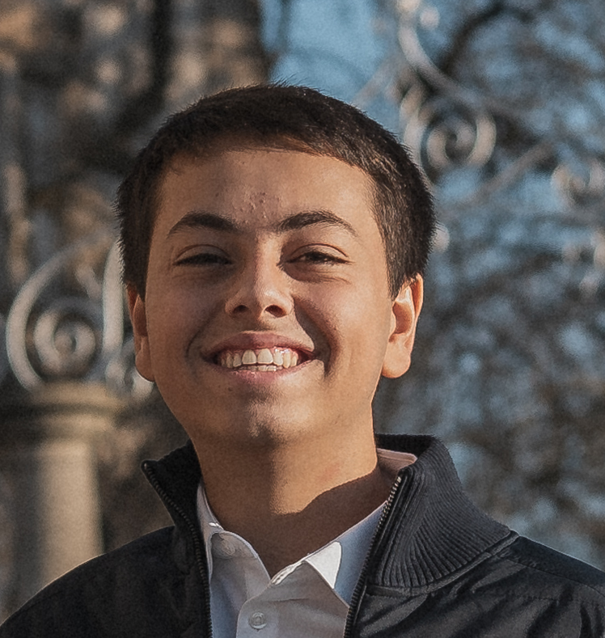

Septembre 2025 - Présent
BUT Réseaux et Télécommunications
IUT Clermont Auvergne - Site d'Aubière (63).
En savoir plusÉtudiant en première année de BUT Réseaux et Télécommunications à l'IUT Clermont Auvergne, avec un intérêt fort pour la cybersécurité, les réseaux et les environnements techniques bien structurés.


$ focus --profile
network: active
security: learning
stage: avril_2027Profil
J'ai 17 ans et je réside actuellement à Clermont-Ferrand. Originaire de la région Stéphanoise, j'ai vécu 5 ans en Nouvelle-Calédonie et 5 ans à Tahiti, où j'ai effectué une grande partie de ma scolarité avant de revenir en métropole pour ma terminale.
Ma passion pour le domaine s'est concrétisée en première grâce à mon professeur de NSI, qui m'a initié à la cybersécurité via un concours de CTF (Capture The Flag). Ce déclic m'a poussé à rejoindre le BUT Réseaux et Télécommunications pour approfondir mes compétences techniques.
Aujourd'hui, je souhaite mettre mon adaptabilité, ma patience et mon sens de l'organisation au service d'une équipe. Dans le cadre de ma formation, je suis à la recherche d'un stage à compter d'avril 2027.


Parcours
IUT Clermont Auvergne - Site d'Aubière (63).
En savoir plus
Lycée François Mauriac, Andrézieux-Bouthéon.
En savoir plus
Collège et lycée en Nouvelle-Calédonie et à Tahiti.
En savoir plus